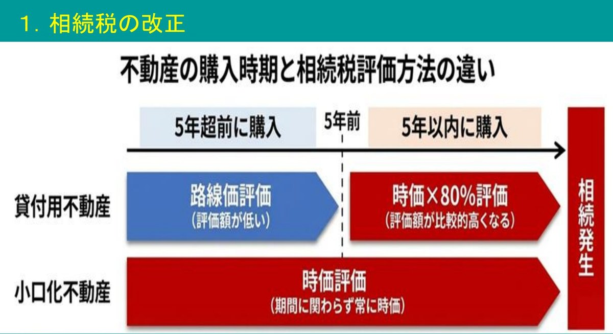
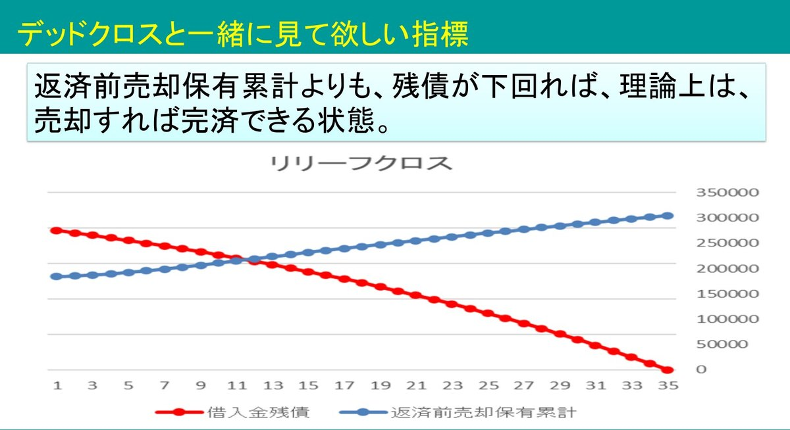

大家さん専門税理士が語る！
いま不動産オーナーに一番響くのは、節税よりも「事業承継」だと講師は見ています。令和8年度の税制改正で、亡くなる前5年以内に取得した貸付用不動産は時価で評価されることになり、駆け込みの相続対策は効きにくくなりました。一方で、お子さんから「不動産は継ぎたくない、現金でほしい」と言われる大家さんが増えています。1億円の建物で評価を7,200万円圧縮しても、毎年480万円ずつ財産が増えるため、単純計算で15年ほどでその効果はなくなります。
講師は、祖父が相続対策で建て、父の代で固定資産税も払えなくなった実家のアパート経営を、自ら引き継いで立て直しました。その経験から、賃貸経営は建物・入居者・お金の3つを管理する仕事で、なかでもお金は将来のお金の管理が大事だと言います。
講師は、この先の手残りを年ごとに数字にした「事業計画表」を作ります。下の試算は、家賃収入3,000万円・諸経費600万円・借入返済1,380万円・生活費500万円を毎年同じにしたものです。それでも手残りは年々減り、18年目にはマイナスになります。
| 経過年数 | 支払利息 | 税金 | 手残り |
|---|---|---|---|
| 1年目 | 820 | 137 | 383 |
| 6年目 | 810 | 301 | 219 |
| 12年目 | 700 | 416 | 104 |
| 18年目 | 570 | 534 | −14 |
| 24年目 | 400 | 607 | −87 |
| 30年目 | 210 | 700 | −180 |
単位：万円。税金は所得税・住民税。出典：講師のスライド「賃貸経営は右肩下がりのビジネスモデル」から抜粋した試算
理由は2つあります。1つは利息です。多くの大家さんは元金と利息の合計が一定の元利均等返済で借りているため、返済額は変わらないまま、経費になる利息だけが減って税金が増えていきます。もう1つは減価償却です。設備などを短い期間で償却していると、償却が終わった翌年から税金が一気に跳ね上がります。
確定申告は過去の数字で、しかも利益の計算です。元本の返済は利益の計算に乗らないため、申告では黒字でも、手元のお金は赤字ということがよく起こります。利息と減価償却の状況が分かる税理士なら、事業計画を作れば手残りがいつマイナスになるかを先に察知して、手を打てます。
不動産に換えると、相続税の評価は時価より大きく下がります。たとえば現金150を建物50・土地100の不動産に換えると、相続税評価は建物30（固定資産税評価額）・土地80（路線価）になります。賃貸にすると建物は3割、土地も2割ほど下がり、合わせて84と半分ほどになります。
この差を使った節税が問題になり、令和4年の最高裁判決では、相続税の軽減を意図して購入・借入れをしたとして、路線価ではなく時価（鑑定評価）での評価が認められました。根拠は財産評価基本通達の総則6項です。金融機関の稟議書に「相続対策のため」と書かれていたことも、意図があったと見られる一因になりました。
令和8年度の税制改正は、この線引きをはっきりさせました。亡くなる前5年以内に取得・新築した貸付用不動産は、原則として時価で評価します。簡便法として取得価額をもとにした額の80%で評価でき、土地は取得価額×地価の変動率（相続時の路線価÷購入時の路線価）、建物は取得価額から減価償却費を引いた額がもとになります。
それでも2割は下がり、5年を過ぎればこれまでどおり路線価などで評価できます。対象は令和9年1月1日以後の相続・贈与で、令和8年に買った物件でも、相続や贈与が令和9年以降なら新ルールの対象です。ただし、通達が定められる日の5年前から持っている土地に、その日までに新築した家屋（建築中を含む）は対象外です。

収録時点では、通達はまだ案の段階です。9月18日に出た通達案では、自宅、貸し駐車場（借地借家法の適用がない）、5年より前から持っている建物の増改築は対象外とされました。建替えは対象外に明記されておらず、講師の読みでは、今の案のままだと通達の日までに新築していない建替えは時価評価の対象になりそうです。なお、自宅でも総則6項は残ります。
最近増えている相談が、「80歳を超えた父が、法人にお金を貸して法人で物件を買うべきか」です。講師の答えは、何を優先するかで個人か法人かを決める、です。
法人で買うと家賃が法人に入るので、父の財産はそれ以上増えません。株主を子にすれば、利益は子の株の価値になります。つまり効果は「増やさない」ことで、「下げる」ことではありません。だから相続まで時間があるなら法人、短いなら個人というのが講師の目安です。父が法人に出資して買う方法は、非上場株式の評価の見直しが議論されているため、いまは効果を見通せないとしています。
貸付用不動産について今回の改正で変わったのは、駆け込みの部分だけです（小口化不動産は別）。5年を過ぎれば路線価や固定資産税評価額が使えるので、これまでの不動産オーナーは変わりません。講師が挙げる、これからの心がけは2つです。
手残りが右肩下がりなのに対し、相続税は右肩上がりです。借入れの元本が減り、手残りが貯まるほど、財産が増えるからです。講師は、1億円の建物を建てた場合で試算しました。
利回り7%・借入期間30年・利率1.5%での単純計算。元本返済と手残りは初年度の額。
評価を下げても、15年ほどで効果はなくなります。必要なのは相続税が増えても大丈夫な対策です。相続まで15年以上あるなら、財産がそれ以上増えない法人での賃貸経営が有利になる可能性もあります。
そのため、事業計画の借入残高と手残りを連動させて、将来の相続税の推移まで出しておきます。「今亡くなったらいくら」の試算だけでは、10年後にいくら用意すればよいかが見えないからです。
講師がいま最も危機感を抱いているのは、お子さんから「不動産は継ぎたくない、現金でほしい」と言われるケースです。築年数が古く、修繕費がいくらかかるか分からず、家賃も下がって手間ばかり。賃貸経営に魅力がないと思われていることが一番の問題だといいます。
ただ、講師は思い込みによる部分も大きいと見ています。「相続してしまった」と相談に来た方の物件が、駅から徒歩10分・満室・借入れなしと、実はとても恵まれていたこともありました。講師は「賃貸経営の5重苦」として、空室20%超・耐用年数オーバーの築古・借入れ億超で返済比率70%超・立地が最悪・預金ゼロを挙げますが、5つとも当てはまる人はほぼいないといいます。
売却か、修繕か、建替えか。相談を受けたとき、講師は次の順番で考えます。講演のテーマ「事業承継から逆算する」の出発点が、ここです。
事業承継の可能性を見るときは、物件の価値を「資産」（立地・建物の状態）と「運用」（オーナーの頑張り・こだわり）に分け、割合を数字にしてもらいます。運用の割合が大きい物件、特に自主管理で忙しくしている親を見て、お子さんは「自分にはとてもできない」と感じがちです。
困っているオーナーほど、子どもと話していません。まずは継いでほしいと口に出して伝えること。そのうえで、お子さんがどこまでならできるかを一緒に考えます。
相続税は一時点の数字で、その後も賃貸経営は続きます。講師の実家は相続税だけを考えて建て、重荷を背負いました。そこで、相続税からその後の手残りの累計を引いた「相続税負担額」の推移で比べ、小さい方を選びます。
比べるときは、5年ルールも加味します。悩んでいるだけでは何も解決しないので、数字にして判断します。
対策は相続の前だけでなく、認知症になる前に済ませておく必要があります。売買や抵当権の設定などの契約には本人の意思能力が必要で、判断能力が欠けると家庭裁判所が後見人を選びます。後見人は財産を守るのが役目なので、生前贈与はできず、投資もかなり難しくなります。相続対策に早すぎることはありません。
講師のおすすめは、建物は法人に、土地は家族信託にするハイブリッドです。土地だけなら担保や売却の設計で済み、費用も抑えられます。
合同会社は、定款に相続の定めがあるかを確かめる
定款の認証が要らない合同会社は、ネットのひな形で自分で設立する人が増えています。定款に「相続人は持分を承継して社員となることができる」という定めが無いと、持分は相続できません。
その場合、出資者が複数なら払戻し、1人なら会社が解散します。持分の相続税評価は（資産−負債）×持分割合で計算され、非上場株式の評価で使える類似業種比準価額なども使えないため、上がるおそれがあります。払戻しが出資の元本を超えれば、みなし配当として所得税もかかります。定款は出資者の合意で変えられるので、相続の前に必ず書いておきます。
株式会社でも、株主が亡くなると、遺産分割が終わるまで株は相続人全員の共有（準共有）になり、議決権は持分価額の過半数で選んだ代表者が行使します。長男と次男が2分の1ずつなら、どちらも過半数に届かず、会社の重要な決定ができなくなるおそれがあります。
会社を作るなら、遺言書を中心に、種類株式（後継者に普通株式、それ以外の人に無議決権株式）や株式信託で、誰が承継するかまで手当てしておきます。
承継者が嫌がっているのは、不動産そのものより、引き継ぐ負担です。求めているのは大きな儲けより、長期の安定。講師が挙げる方法は3つです。
今やらなければ、修繕のしわ寄せは承継者に回るだけです。建築費の半分ほどは人件費で、これは下がらないため、講師は「今が一番建築費が安い」と見ています。どうせお金をかけるなら、外壁の色を変えて印象をガラッと変えるなど、守りから攻め（差別化）の修繕にします。
相続税の面では、建物の評価（固定資産税評価額）が上がるのは、改築・増築にあたる資本的支出だけです。外壁塗装は基本的に修繕費なので、現金が減っても建物の評価は上がりません。5年ルールの対象外でもあり、相続の直前でも効果があります。
資本的支出になる増改築でも、評価額がまだ付いていない部分は（再建築価額−償却費相当額）×70%で評価します。講師の計算例（相続直前にRCの住宅へ2,000万円）では約1,373万円で、賃貸の3割減を合わせると約961万円（約52%減）です。
修繕の時期がまだ先なら、修繕積立金を積み立てます。預金では経費にならないので、個人なら小規模企業共済（事業的規模の方に限り、月7万円まで所得控除）、法人なら倒産防止共済（月20万円まで経費、総額800万円が上限）を使うと、無理なく積み立てられます。講師自身は、修繕費は今後も上がるとみて、経費にするより運用して増やす方法もすすめています。
建替えや大規模修繕は気力と体力が要るので、元気なうちに親子で取り組みます。講師はこれを事業承継のチャンスと見ています。見積もりを比べ、価格・信用力・提案力・デザイン力のどれで選ぶかを、お子さんに決めてもらうのです。
決断に慣れていない人ほど、賃貸経営を嫌がります。法人ならお子さんを役員に加えて、責任を与えます。責任があって初めて当事者意識が芽生え、経営者として判断できるようになります。講師自身も、継いだ当初は他人事で苦しみましたが、代表者として腹をくくってから、賃貸経営が楽しく思えるようになりました。
「借金を残したまま子どもに継がせてよいか」という相談は、特に地方のオーナーから多く寄せられます。講師は、その不安の多くは漠然としたものだと言います。賃貸経営は事業計画が立てやすく、計画とずれることも少ない事業です。返済しても手残りが残る計画を、数字で子どもと共有します。
そして賃貸経営は、売却すればやめられます。不幸なのは、売っても借金が残ってやめられない状態です。講師は、保有中の手残りの累計に、売却額から諸費用と税金を引いた額（借入れを返す前）を足したもの（返済前売却保有累計）が、借入金の残債を上回る時期を、独自に「リリーフクロス」と名付けています。ここを越えれば、いつでもやめられます。

講師は、大家さんの承継を「資産承継」と呼ぶのは残念だと言います。不動産を渡して終わりではなく、事業を引き継がなければ承継したことにならないからです。相続対策は早めに、事業承継まで考えるなら60代から。継ぎたくなる資産にし、継いでほしいと口に出して伝え、借入れは売却すれば大丈夫な状態にしておく。それが、事業承継から逆算する相続対策です。
※ 本資料はセミナー講演をAIで再構成したものです。記載の数値・見解は講演時点のものであり、特定の取り組みの結果を保証するものではありません。